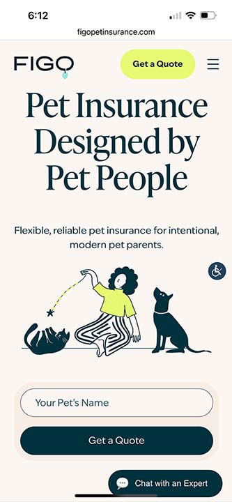
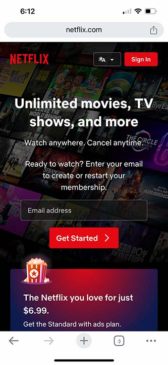
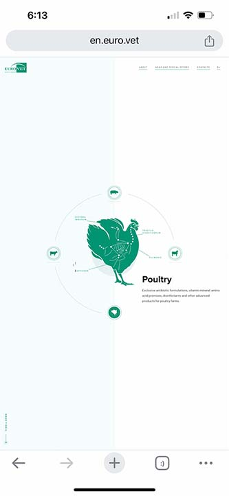

Visual Hierarchy
Figo Pet Insurance
Website: www.figopetinsurance.com Explanation:
Figo Pet Insurance's website is a great example of visual hierarchy. They use a very large bold font to grab your attention. They do a good job at drawing your eyes to the most important aspects of the site, which are the Get a Quote button, the main quote in the center, and the secondary Get a Quote button at the bottom.
PARC: Contrast
Netflix
Website: www.netflix.com Explanation:
Netflix does a good job at using contrast in their website. The bulk of the site had a dark gradient over it. They use the bright red elements to draw your eyse where they want them.
White Space
Euro Vet
Website: en.euro.vet Explanation:
Euro Vet does an excellent job at using white space. The bulk of the site is white space, which creates a wonderful focal point in the center where the green chicken is.